Woody ornamentals are trees, shrubs, and woody vines. They are the backbone of the landscape. Used creatively, they define outdoor living spaces and can add a vertical and a horizontal dimension to the landscape.
Woody ornamentals are more permanent than herbaceous, non-woody ornamentals. They usually cost more and require more work to plant properly. For these reasons, it is critical that a gardener plan before planting. Choosing the right plant for the right place will save much effort and expense and provide long-term satisfaction.
A Master Gardener Volunteer must know the basics of selection, purchasing, planting, and care of trees, shrubs, and vines. It is imperative to have a basic knowledge of these important landscape plants.
Planning the Landscape
Planning requires knowledge of both the site conditions and the cultural requirements of plants. There are hundreds of species of trees, shrubs, and vines available to the gardener.
A gardener’s knowledge grows with exposure to new plants and situations. Observing where plants do well in nature is helpful in expanding your basic knowledge of woody plants.
Functions of Plants
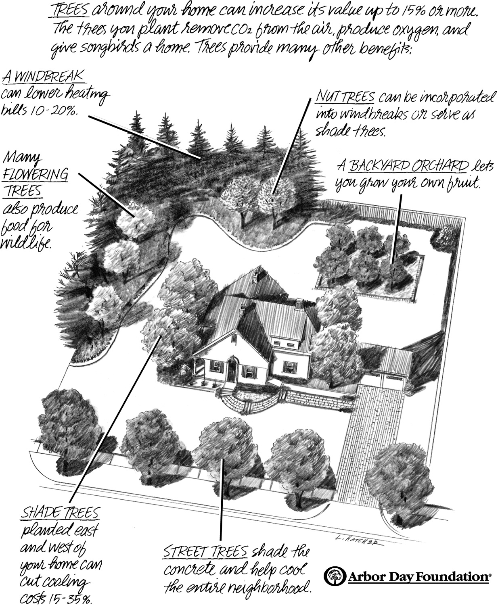
The first question to ask when thinking about planting a woody plant is, “Why is that plant going into that spot?” The plant must have a function in the location where it is to be planted. One function maybe to be attractive or draw the eye to a particular area of the landscape. For example, a magnolia in full bloom can be used to lead the eye of a visitor to a home’s front entrance.
Trees, shrubs, and vines also are planted for practical functions. They are excellent for screening an unpleasant view. Vines can be planted and maintained in vary narrow spaces and offer excellent screening. Trees and vines are often planted to shade a patio or the house. Well-placed trees and shrubs divide the landscape into areas for play, entertainment, specialty gardening (vegetable, fruit, or cut-flower gardens) and yard maintenance (composting, propagating, and heeling in). Other functions include wind breaks, home security and traffic barriers.
Environmental Factors
Hardiness zone, soil conditions, moisture levels, and light levels are key factors in site analysis. Knowing these key factors permits gardeners to select the right plant for each site. Problems arise when these factors are not considered. Decisions should be based not only on the plants a gardener likes, but also on the plants that are appropriate and will do well under existing conditions.
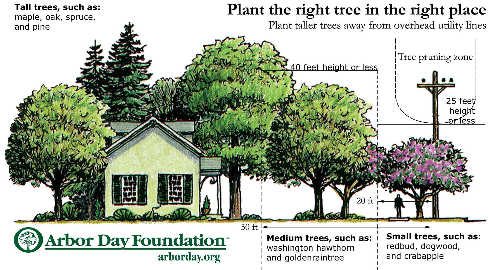
Considerations for Woody Ornamentals
Choosing and planting a tree should be a well-informed and planned decision. Proper selection and planting can provide years of enjoyment for you and future generations as well as increased property value, improved environmental quality, and economic benefits. On the other hand, an inappropriate tree for your site or location can be a continual challenge and maintenance problem, or even a potential hazard, especially when there are utilities or other infrastructure nearby (From Purdue University Extension).
Hardiness of Woody Plants
Hardiness is normally based on the average lowest temperature of an average winter. This is a critical factor. If a plant cannot survive the coldest winter temperatures for extended periods, it is not reasonable to plant it. While winter protection can modify cold hardiness to some extent, it involves additional maintenance and the risk of the plant’s death.
Winter or cold hardiness is not the only concern. Plants must also be able to survive other environmental conditions - summer heat, drought, rainfall, and drying winds. These and other weather conditions affect hardiness. A plant cannot be considered hardy for an area if it cannot survive during all seasons. However, hardiness maps are based on winter conditions. You must know in which hardiness zone you live.
Soil Amendments for Woody Plants
Soil type is discussed in Module 2, but you should be aware that soil affects plant hardiness. For example, a Zone 6 plant may be hardy in Zone 5 if it is planted in a sandy loam. However, if the plant is in heavy clay that may retain too much moisture during winter, the plant’s potential hardiness is reduced. Most references provide the recommended soil type for a plant. You will most commonly see “moderately fertile, well-drained loam” as the recommended soil condition.
Most Ohio soils are clay and may require amendments or special preparation before planting. Another option is selecting a plant that grows easily in heavy clay soil. The following are examples of plants that grow well in heavy clay soil - northern bayberry, catalpa, flowering quince, burning bush, forsythia, green ash, elm, honey locust, privet, black locust, and Oriental arborvitae.
Soil fertility and pH also affect plant selection and growth rate. Some plants require a regular application of fertilizer, while others survive quite well under low fertility. Likewise, certain trees and shrubs grow better in certain pH ranges. The following are examples of plants that grow best in acidic (pH 5.5 to 6.2) soil - rhododendrons, azaleas, and fothergillas.
Moisture Requirements & Irrigation
Moisture availability must also be considered. Too much or too little moisture may be a limiting factor when choosing a plant. Few plants can tolerate constantly wet soil. When soil is saturated with water, air is forced out. Plants cannot move oxygen from the leaves to the roots. Oxygen must be absorbed through the roots. However, some plants are adapted to wetter soil conditions.
Conversely, there are few plants that thrive in excessively dry conditions. Water is essential for dissolving nutrients in the soil so they may be absorbed by the roots Plants that grow well during summer droughts are becoming increasingly popular in areas where water shortages occur.
Irrigation is an option for some dry sites. However, it can be expensive, costly to maintain and labor-intensive and must be applied on a regular basis. Planning a landscape with differing zones of watering needs is a practical approach. Place plants with similar moisture needs together to simplify irrigation and avoid incompatibility problems.
Sun & Wind Exposure
Exposure to sun and wind are important considerations in plant selection. Drying winds and reflected heat from buildings cause desiccation (transfer of excessive amounts of water from leaves and into the atmosphere), especially during winter when the ground is frozen and moisture is unavailable to plants. Prolonged desiccation can result in death of individual cells and plant tissue. Some plants have defense responses to decrease the effects of desiccation. An example is the leaves of broad-leaf evergreens which curl to reduce the amount of leaf surface exposed to drying winds.
In summer, drought combined with high temperature and drying wind will cause noninfectious or environmental leaf scorch on many plants. Leaf scorch can be intensified for trees that have restricted root space. In this situation, moisture sources are blocked by the adjacent pavement. Additionally, as the pavement heats, it raises the temperature of the surrounding area, causing the tree to lose more moisture.
The amount and intensity of sunlight influence plant growth and selection. Plants are often listed by sun and shade requirements. Placing a plant that requires a sunny exposure in a shaded environment may result in slow, leggy growth, reduced flowering, and poor fall color. Conversely, plants that naturally grow in shade are likely to show symptoms of desiccation and leaf scorch when placed in a sunny exposure.
There are various degrees of sun or shade. Full sun means six to eight hours of exposure to sunlight. Filtered shade is sun coming through a canopy of leaves. Partial shade refers to an area that is shaded for part of the day and sunny for less than six hours a day. Deep shade is cast from a structure resulting in little or no direct sunlight.
Aesthetics
Aesthetics is the subjective evaluation of beauty. Plants have individual and collective aesthetic value. Some plants are so beautiful; they can stand alone as a focal point. Others are individually less beautiful but can be combined with complementing plants to create a pleasing effect.
Most landscapes are limited in the number of plants that can fit into the available space. Know the size of a plant at maturity and provide adequate space for it.
It is important to consider the aesthetic value of the plant throughout the seasons of the year. Too often, gardeners focus on the season of flowering and forget about the other seasonal qualities of a plant. Too many popular, spring-flowering plants have little else to qualify them for landscape use. Form, interesting bark, fall foliage, and fruit are other characteristics that can enhance the landscape throughout the year.
A plant that combines many of these characteristics throughout the year is called a four-season plant. Some flowering crabapples fall into this category. In spring, the flush of color from the blossoms is spectacular. The summer foliage is glossy and green. During autumn, the small apples ripen, providing a second seasons of color. The best crabapple cultivars hold their fruit into winter adding aesthetic interest as well as food for birds.
Woody Ornamental Selection
With so many plants and so many design considerations, how does a gardener determine which plants to grow? You may choose to rely on the judgement of professionals. The Ohio Nursery and Landscape Association provides a list of preferred plants in the bulletin, Plants for Ohio. The list is in the Reference Section. Dr. Michael Dirr’s reference, The Manual of Woody Landscape Plants, is indispensable.
The alert gardener observes what is growing in the neighborhood and evaluates the positive and negative aspects of these plants.
Form & Texture
Form. The shape and structure of the plant should blend well with the other plants and serve a purpose. Plants can be classified as rounded, oval, pyramidal, vase-shaped, upright, horizontal or columnar. Weeping trees, contorted shrubs and distinctive shapes will stand out from most landscape plants.
These special forms should be used as focal points. Use contrasting form for added interest and depth.
Too much contrast in form will result in a lack of harmony in the landscape. Use a plant for its growth and mature form. Some plants change their form as they mature. The Scotch pine begins its life with a conical form, but matures into a windswept, irregular flat-topped shape when mature.
Texture is frequently associated with foliage. However, the woody structure of a tree or shrub is also part of the texture. Fine texture is associated with small leaves and thin branches. Cotoneasters and willows are examples of finely textured plants. Coarse texture is achieved with larger leaves, or thicker, sparse branches, as on oakleaf hydrangea.
Coarse textures may be more appropriate for larger landscapes, while fine textures might be more appropriate in a smaller landscape. A small area can be made to look larger by using finely textured plants. Coarsely textured plants can be used as accents in smaller landscape.
Growth Rate & Size
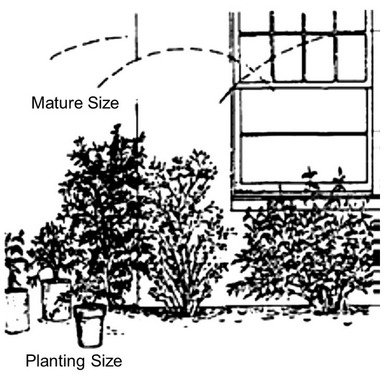
Size. Landscapes should have plants of different sizes for added interest. Taller plants normally form a backdrop for progressively shorter plants. The scale of the landscape and permanent structures must be considered when choosing plants. A towering tulip tree dwarfs a one-story home on a small lot. The same tree is in scale with a three-story mansion on a large estate.
When planning a landscape, allow enough space for each plant to reach its maximum size. A mature Scotch pine tree has a spread of 30' to 40' and reaches a height of 50' to 60'. The small holiday tree that is only 5' tall and 4' wide should not be planted 8' from the corner of the house.
Many people crowd young plants together to make a new planting look good when it is planted. This is fine if some of the plants are removed as the most desirable plants grow.
Alternatively, annuals or less expensive, short-lived plants can fill the gaps until the woody plants begin to fill the space.
The size at the time of purchase influences the price. Larger plants may fill the space more quickly; however, they may take a longer time to establish after transplanting. Often a small plant will establish more quickly. Most plants grow much faster when they are young.
Growth Rate. Slow-growing plants are ideal for rock gardens or for a collection of dwarf plants. Slower growing plants require less maintenance. However, most people want woody ornamentals to grow as fast as possible. There are drawbacks to fast-growing trees and shrubs:
- They require more maintenance - usually in the form of pruning to insure structural stability. Their wood may be weaker than slower growing species.
- They are more likely to be damaged in high winds or during ice storms.
- They often have a shorter life span.
Maintenance Requirements
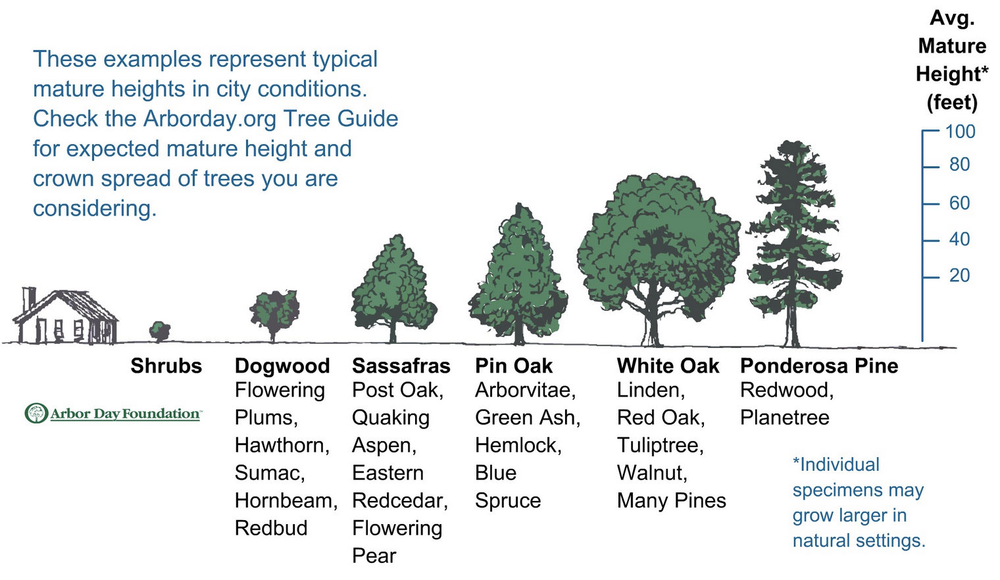
Plan the landscape so it is divided into zones of maintenance. These zones can be defined as the following:
- High care (frequent irrigation, weeding, pruning, edging, deadheading)
- Moderate care (infrequent irrigation, minimal weeding because of mulching and pruning only for disease or damage)
- Low care (no irrigation, naturalized plantings, and only minor pruning)
Health & Quality
After making an informed decision on which plants to include in the landscape, gardeners must know what to look for when acquiring the plants. Purchasing at the nursery where the plants were grown reduces the potential for improper handling. If a trip to the nursery is not possible, purchasing from a garden center staffed by knowledgeable professionals may ensure that the plants have been given proper care.
Health. The tree or shrub should have its normal or natural seasonal color. Off-color can indicate nutritional problems or improper care. A plant that grows in the shade will burn if it is displayed at a garden center in full sun after growing in a lath house in the nursery.
Closely examine plants for disease symptoms. Check for insects and eggs on the foliage and branches. If you notice there has been considerable unseasonable foliage drop, look for a cause.
The roots should fill the container or soil ball without being too crowded. The soil ball of balled and burlapped plants should be solid, unbroken, and evenly round. The roots should be a light tan to white color. Dark-colored roots are not healthy.
Quality. A well-grown plant should have the natural form for that species. It should have well-spaced branches without co-dominant leaves. All sides should be approximately equal. Excessive shearing usually results in problems. Judicious pruning while in the nursery results in a well-formed tree or shrub. You should not expect to do much pruning at the time of planting to have a quality plant.
Broken branches or a loose soil ball indicate rough handling of the plant. The plant should be firmly supported by the soil.
Bare-Root vs Balled & Burlapped vs Container-Grown
Trees, shrubs, and vines can be purchased bareroot, balled and burlapped, or container-grown. There are advantages and disadvantages to each.
Bare-root plants are grown in the field or in an artificial medium. The soil or medium is washed from the roots before packaging and shipping. Then the roots are wrapped with a moist medium, such as sphagnum peat, and packaged. Bare-root plants usually are limited to deciduous plants, such as roses, fruit and nut trees, and some trees and shrubs. They are ideal for mail order purchasing because they are lightweight.
They are shipped for planting when the plant is dormant and are ideal for early-spring and late-fall planting. If planting bare root stock in the fall, apply around 12" of mulch around the root system to prevent heaving. A common reason for failure of bare root plants is from roots drying out. The roots must be kept moist. Bare-root plants should be soaked in water for a half hour before planting. Package instructions often recommend a longer soaking time. However, never soak the roots for more than two to four hours.
Bare-root plants may require additional pruning at the time of planting. Any roots that are broken should be pruned. Bare-root plants may require staking until the roots become established in the soil.
Balled and burlapped plants are field-grown. When they are dug, the soil ball should be covered with a biodegradable burlap to hold the soil together. Since balled and burlapped plants have been root-pruned, a fibrous root system usually develops within the root ball. The soil in the root ball must be kept moist. The first order lateral roots should be at the surface of the rootball.
This system is ideal for conifers, broadleaf evergreens, and non-taproot forming trees and shrubs. They can be planted any time the soil is workable. However, balled and burlapped plants must be dug from the field when conditions are not too wet. Summer planting will require special attention to irrigation.
Although balled and burlapped plants are heavy and cumbersome to handle, they usually reestablished more rapidly and successfully than container grown plants. Be sure to remove most of the burlap once the plant is in the planting hole. However, do not disturb the soil in the ball when cutting the burlap.
Container-Grown Plants. These plants are convenient and easy to handle. The medium in the container is often a mixture of bark chips and peat moss and, therefore, is lightweight. The plant grows rapidly in the medium, often resulting in roots that have encircled the pot. These roots must be separated or cut to avoid the potential for root girdling after 12 to 20 years in the ground. Butterflying (cutting and spreading out) the roots of container-grown plants is recommended to avoid girdling roots. The first order lateral roots should be visible at the surface of the container.
Container-grown plants can be planted any time the soil is workable. The roots that grow in a non-soil potting mix are different from those that will grow in mineral soil. Amend heavy clay soil with organic matter to improve rooting. Special attention must be given to irrigation when planting during the summer.
Take the plant out of the container when planting. If the plant does not come out of the container easily, cut the container into sections and pull it off. Pressed peat pots do not break down quickly enough and may draw off soil moisture and wick it into the atmosphere. Therefore, plants should be removed from pressed peat pots before planting.
Because of the popularity of container-grown plants with the nursery industry, the selection is more extensive.
Planting Woody Ornamentals
Improper planting is a major reason for tree and shrub problems. A correctly planted tree or shrub that is appropriate for the site conditions usually will be a low-maintenance asset in the landscape.
Season to Plant
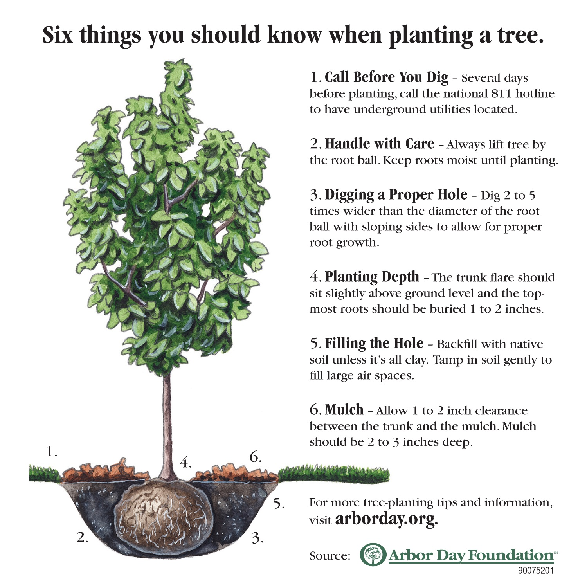
Spring and early fall are the best times to plant trees and shrubs. Some plants are known to be difficult to transplant or slow to become established. These should be planted in the spring. Where conditions are unfavorable or difficult, spring planting is recommended. Spring planting provides a longer season for establishment.
Woody plants recommended for spring planting include birches, clematis, dogwoods, elms, European hornbeams, hawthorns, goldenrain trees, magnolias, oaks, flowering pears, poplars, sourwoods, sweetgums, tulip trees, willows, Zelkovas, raspberries, blackberries, cherries, apricots, and peaches.
Early fall is an excellent season for planting most trees and shrubs. The plant naturally requires less frequent irrigation at that time of the year. Shoot growth is minimal and is becoming dormant. Soil temperature is ideal for root establishment and usually remains high enough for root growth into December. Stored carbohydrates will be at a maximum in fall and available for root growth.
After planting, mulch the soil with 2" - 3" of organic matter to conserve water, maintain even soil temperatures and inhibit weed growth.
The Planting Hole
The planting hole will differ for bare-root plants and container grown or balled and burlapped plants. The hole for bare-root plants should be dug so the plant will sit on a cone of undisturbed soil. The cone should support the plant so the flare at the base of the trunk is just above the soil line. Make sure the planting hole extends out twice the width of the root system.
Balled and burlapped plants and container grown plants should sit on undisturbed soil. It is critical that the root crown or first order lateral roots be at the surface of the soil - or one to two inches above grade if planted in clay soils. The planting hole for container-grown plants will not be at the same depth as the container because you will be butterflying (splitting the bottom one-third of the root mass and spreading it out). The planting hole depth must be higher so that the plant is not placed too deeply. The width of the hole should be at least twice that of the soil ball. The wider the hole, the better the root establishment.
The most common mistake is planting too deeply. The flare at the base of the trunk should be just above the soil level. If a flare isn't visible at the base of the trunk, remove the excess soil on the root ball (before digging the hole).
Backfill
Backfill is the soil that is dug out of the hole and then used to place around the roots when planting a tree or shrub. Most soil should be amended before it is used as backfill. There is controversy over amending the backfill with organic matter. Some research indicates that backfill should not be amended, but the planting sites in these studies were not the compacted soils typical in urban and suburban sites.
Furthermore, the sandy loam soils of some plant nurseries and the highly organic container mixes used by growers are drastically different from the typically heavy clay soils of most planting sites. Survival and vigorous growth is greatly increased when drainage problems are corrected, and backfill is amended with organic matter.
The soil, whether clay or sand, usually lacks organic matter. The soil should be improved by adding up to one-third by volume of organic matter to the native soil. The organic matter can be humus, aged manure, peat moss, or a combination. Do not use fresh manure, grass clippings, or uncomposted material because nutrients that would normally be available for the newly installed plant would instead be used by bacteria and fungi to decompose fresh organic matter.
Fertilizing, Watering and Pruning at Planting
Fertilizing at Planting. A soil test should be done before planting so nutrients can be added or pH levels can be adjusted.
Watering at Planting. Fill the hole about halfway with backfill and then irrigate to settle the soil. Add more backfill to ground level and water again to settle the additional backfill. Additional backfill may be required once the soil settles. This process eliminates air pockets. Do not pack wet soil with your feet or a tool. Allow it to settle naturally.
Watering will be made easier if soil is piled around the planting hole to create a saucer to hold water. During the first year after transplanting, irrigation is important. Apply enough water to thoroughly wet the root ball. Check by probing the soil to make sure the soil ball is getting wet. The amount of water applied will depend on the amount of rainfall, plant size, and drainage conditions. Apply water slowly with a dripping hose or a soaker hose to avoid runoff. Allow soil to dry slightly before watering again. Alternatively, tree water bags are specially designed plastic bags that wrap around a tree and slowly release their water contents to tree roots.
Pruning at Planting. Only minimal pruning should be necessary when planting. Remove broken branches and branches that are rubbing. Bare root plants may require additional pruning because of the reduced root surface. One year after planting a tree or shrub, prune for proper structure and shape.
Tree Wrap & Support
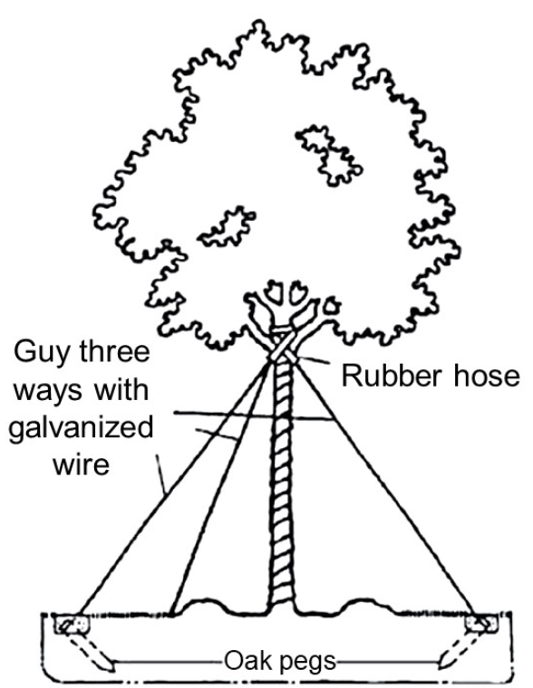
Trees with thin bark (dogwoods, maples, birch, and fruit trees) that may be damaged by sun or frost may be wrapped. Use tree wrap paper and wrap from the bottom up, overlapping slightly. Remove loose wrap and plastic tubes that may be on new trees. Excessive moisture is maintained behind these, and may result in trunk decay. Insects may become a problem under loose wrap. Remove all wrapping material after the first complete growing season.
Wire mesh may be placed around the base of the trunk to prevent rodent feeding during the winter.
Staking is recommended for larger bare-root trees and in problem situations where a tree is likely to be blown over. When staking is necessary, it must be done correctly and left in place no more than one year. Guy wires must allow some movement of the tree. Where guy wires wrap around the tree, they must be covered to avoid damaging the bark. Pieces of rubber garden hose placed around the wire may protect the bark. Plastic chainlock material is also available and is less likely to damage the tree trunk.
Two stakes are generally sufficient for trees less than three inches in diameter. Larger trees should be supported with three guy wires anchored by stakes placed in a triangle around the tree.
Maintaining Woody Ornamentals
A regular program of maintenance is required for best results with any tree or shrub. This program may include irrigation during the early years, core aeration, mulching, fertilization, pruning, and regular inspection for disease and insect problems.
Watering Woody Ornamentals
Watering woody ornamentals depends on the species and the soil. Some plants tolerate dry conditions better than others. A tree growing in a fertile, well-drained sandy loam may become established in one to five years. Once established, this tree would require little supplemental irrigation. A slowly establishing tree planted in poorly drained, heavy clay may require supplemental irrigation for several years.
During the first four to ten years after planting, trees and shrubs may require supplemental watering, especially for slowly establishing trees. Well adapted, native trees often require limited irrigation when established.
The most critical season for supplemental irrigation is usually during summer. However, any time during the growing season when rainfall is inadequate for more than a month or two can create water stress. It is necessary to begin watering before soils dry completely. Probing the soil and feeling for moisture is a reasonably accurate way to determine soil moisture.
Serious water stress in late fall is not desirable and can have dire results when it occurs. Plants must have adequate moisture to tolerate the stresses of winter.
Core Aerating Woody Ornamentals
Most of the soils in Ohio are clay-based. The roots of trees and shrubs soon grow beyond the planting hole into native soil. In areas where building has occurred, topsoil is often removed or buried, leaving clay subsoil. Aeration and drainage are a problem. Grass roots compete with tree roots for nutrients, moisture, and air. Deep core aeration may lessen these problems.
In deep core aeration or vertical mulching, drill holes into the soil beginning six to 10 feet from the tree trunk and continuing four to six feet beyond the drip line. The holes are one to three inches in diameter, 12 to 18 inches deep, and one to two feet apart. Remove the soil from the hole. One to two inch diameter holes do not need to be filled. The wall of the hole will gradually collapse creating additional air space in surrounding soil.
The two- to three-inch diameter holes may be filled with composted organic matter. The organic matter can be mixed with an equal part of coarse aggregate, such as vermiculite.
Deep core aeration should be done when roots are actively growing. Early spring and late fall are good times to core aerate. The soil should not be excessively wet or dry. Core aeration is not necessary until the roots have grown beyond the planting hole into the surrounding soil. As a regular maintenance, actively, core aerate every third year. For trees under stress, more frequent aeration may be beneficial.
Mulching Woody Ornamentals
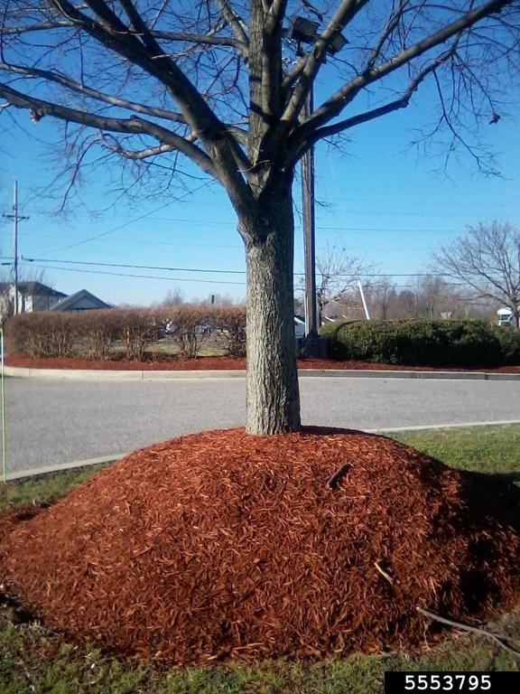
Avoid "volcano mulching" or mounding
mulching around the trunk of the tree to
prevent possible disease, decay, root
girdling, and pest damage
Apply mulch two to three inches deep over the plant’s root zone. Keep the mulch at least three inches away from the base of the trunk. The mulch will help retain weeds from breaking moisture, suppress weeds, moderate soil temperature extremes, and reduce the potential for physical damage to the base of the trunk from lawnmowers and string trimmers.
Organic mulches slowly decompose, adding organic matter to the soil. Organic mulches should be periodically renewed. Never exceed a total depth of three inches of mulch. Occasional raking to fluff the mulch will aid movement of air and water through the mulch.
Landscape fabrics or fiber mulches reduce weed problems while allowing water to penetrate the soil. However, these products can create a variety of problems, and their use is now limited. Ideally, mulch the soil out to the drip line of the tree.
Fertilizing Woody Ornamentals
Soil and environmental conditions in a landscape may differ from those in a natural setting such as a forest. The soil in most landscapes has been disturbed and is often subsoil from excavation of the foundation. In a forest, leaves fall to the ground each year, returning nutrients to the soil. Growth is much slower in a natural setting, resulting in lower nutrient needs.
Trees and shrubs in a landscape often must compete with turfgrass for nutrients. As a result, they must be fertilized for more rapid growth. Application should be in late October through early December or from March through May, while the plants are dormant. Frequency of application is dependent on soil conditions and the age and condition of the plant. Annual fertilization is recommended in poor soil and for young plants, while every other or every third year is adequate in fertile soil and for established plants. Test soil periodically for best results.
Application rates should be based on a soil test. However, a general rate is one pound of nitrogen per 100 square feet for shrubs. The rate for trees will vary, depending on the application method and competition from turfgrass. The fertilizer should have a ratio of 3-1-1 to 4-1-2. Availability of products varies. Look for 24-8-16, 18-6-12, 18-5-9, 15-5-5, 12-4-4, or a similar ratio.
Fertilizer for trees should be broadcast applied except in unusual circumstances. For trees that are mulched or have ground covers under them, use the following general recommendations:
- For trees fewer than six inches diameter breast high (DBH), apply one-quarter pound of nitrogen per every inch DBH
- For trees over six inches DBH, one-half pound of nitrogen per inch DBH.
For instance, applying one-half pound nitrogen per inch DBH to a six-inch DBH tree using an 18-5-9 analysis fertilizer would be calculated as follows:
- 6” (diameter) x 0.5 lbs.(rate) = 3.0 lbs. (amount of nitrogen)
- 3.0 (amount of N) / 0.18 (%N in 18-5-9) = 16.7 pounds of 18-5-9 fertilizer.
The fertilizer should be applied evenly under the entire canopy of the tree. Trees in lawn parcels can normally get by with turf rates of nitrogen.
Applications early in the growing season can be split into two equal parts applied six weeks apart. Fertilizer spikes are popular alternatives. Carefully read the package label to determine the application rate and nutrient analysis.
Commercial tree-care firms offer nutrient injections. These are recommended only when the conventional methods are not possible. Trees surrounded by pavement are an example of when this may be necessary.
Transplanting Trees & Shrubs
Moving established plants in your landscape is a physically difficult task. When a tree or shrub is dug, as much as 98% of the roots are left behind or damaged. Root pruning can be done a year in advance to form a compact root ball of fibrous roots. However, it is still difficult to dig a solid soil ball with a shovel.
Begin by tying branches to prevent damage. Dig a trench around the area that is to be the soil ball. Undercut the soil ball. Slide a piece of burlap or heavy cloth under the soil ball and tie it around the trunk of the tree or shrub. Then slide the soil ball onto a snow saucer or similar device to make moving the plant easier. Sliding is easier on wet grass.
Pruning Basics
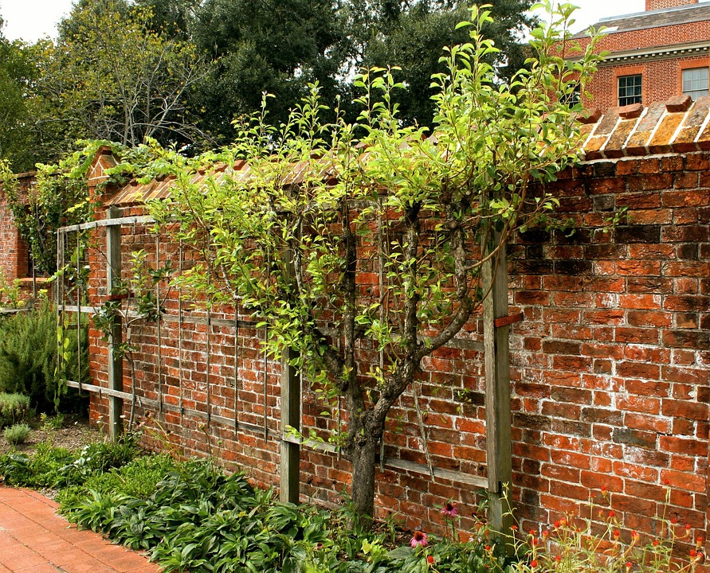
Pruning is the selective removal of plant parts - shoots, branches, roots, flower buds, seed pods, or fruits. A regular schedule of maintenance pruning will reduce growth problems.
Proper pruning will enhance a plant’s appearance and health, while improper pruning will result in serious health and aesthetic problems.
Reasons for Pruning.
- Plant health is a primary reason to prune. Dead, diseased, or injured parts should be removed. A dense canopy should be thinned to improve sunlight penetration and air circulation. Crossing branches should be removed to prevent rubbing of the bark.
- Training young plants will result in an excellent structure of branching. Branches should be well-spaced and at the strongest angles (>35 degrees).
- Creating unnatural forms through pruning has been practiced for years. Bonsai, topiary, espalier, and pollarding are high-maintenance endeavors that can create dramatic focal points.
- Controlling growth is often necessary. Pruning to control the size of the plant results in high maintenance. An alternative is planting a species that only grows to a desired size.
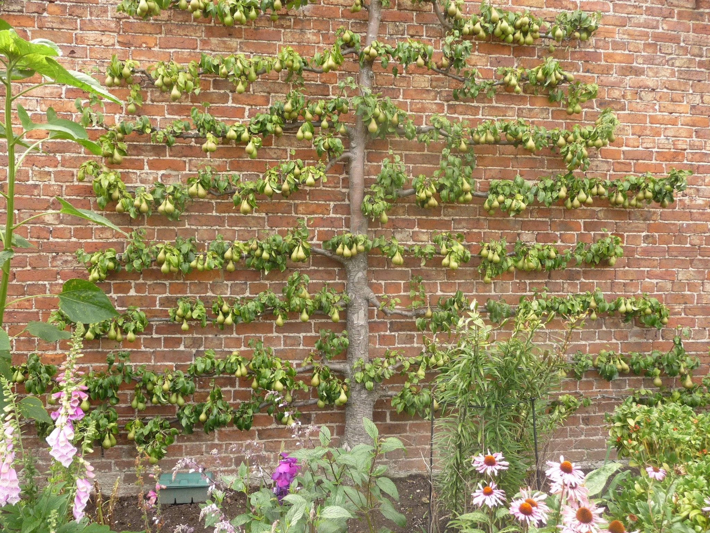
Espaliered Pair Tree
- Rejuvenating old shrubs is a challenging pruning project. A sparse or overgrown hedge can be rejuvenated by pruning back in late winter.
- Selective pruning is a way of thinning overgrown shrubs and hedges to allow for increased sunlight penetration into the canopy, improving the health and longevity of the shrub or hedge. Shaping to a semi-pyramidal form will increase sunlight in the lower canopy and reduce areas with limited leaves and dead spots.
- Improving appearance is a legitimate reason to prune.
- Avoiding injury or damage by pruning is wise maintenance. Low branches can damage cars, poke people in the eye, or be a hazard for the person mowing the lawn. Limbs hanging over utility lines, the house, or other valuable property can be a liability.
- Flowering and fruiting can be controlled by pruning. Flower buds can be removed to encourage more vegetative growth. Pruning can be used to stimulate flowering on some plants like wisteria and lilac. Selectively removing some flowers will result in others being larger or producing larger fruit.
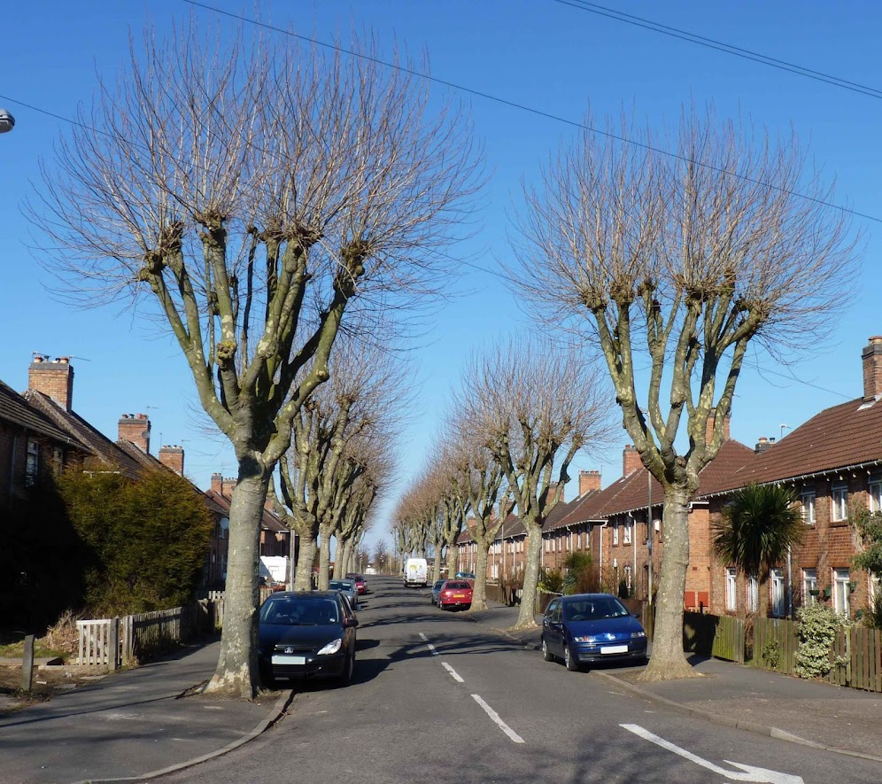
Pollarded Bedow Trees in London, UK
Pruning Equipment. The basic tools every landscape gardener should own are hand pruners, lopping shears, and a pruning saw. Hand pruners or pruning shears are used to clip off stems up to three-quarters inch in diameter. Scissor types with two sharpened blades that overlap when making the cut are recommended.
Anvil pruners have one sharpened blade that cuts against a flat plate. Anvil pruners tend to crush the bark of the stem being cut. Loppers add leverage and should be used to reduce the muscular effort required to make a cut, not to cut larger stems. Do not use anvil pruners.
Lopping shears have long handles to provide leverage to cut through branches up to 1 3/4 inches in diameter. They are useful in rejuvenating shrubs. Double cut or scissor types are preferred.
A narrow, curved pruning saw is excellent for removing limbs up to 2 1/2 inches in diameter. A pruning saw can fit into tight spots and make clean cuts. Larger cuts should be made with coarse-toothed saws or chain saws.
If the effort to cut any stem is so much that the person resorts to twisting, the next larger tool is recommended. Follow safety precautions when using tools, because the injuries that can result from accidents are serious.
Hedge clippers or shears are not used for making pruning cuts. They make straight-line cuts without regard to nodes. They are used for specialty pruning such as espaliers.
Common Pruning Mistakes. Knowing the common pruning mistakes helps gardeners avoid damaging plants when pruning.
- Topping trees and shrubs is a major mistake in general pruning. It results in a witches’-broom effect. Never cut all branches back to the same height.
- Pruning causes buds to break. If pruning is done late in the growing season, the new shoots do not have adequate time to harden off for winter and die-back is likely.
- Painting or putting pruning dressing on pruning cuts is unnecessary and may actually cause harm. Ultraviolet rays in sunlight are nature’s disinfectant. The paint or dressing may seal in moisture and disease organisms, thus negating the drying effects of ultraviolet rays.
- Making pruning cuts flush to the trunk destroys the tissue in the branch collar or ridge. This is the tissue that grows over the wound, sealing it naturally.
Pruning Deciduous Trees
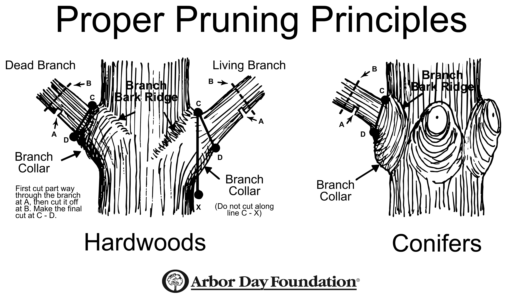
All pruning cuts should be made just above a node. Your cut may go back to a bud or to where a branch emanates from a larger branch. Leaving a stub results in the stub dying. These stubs are entry points for disease and insects.
When a cut is made, hormones are suppressed causing buds within a few inches of the cut to break and grow. This gives you great control over where to make a cut, since you can determine which buds are likely to sprout. Where possible, prune above an outward-facing bud.
The appropriate angle for a branch coming off the trunk is a 45- to 90-degree angle. This results in the greatest strength for the limb.
When sawing off limbs that are greater than one inch in diameter, begin by making an undercut about two inches out from the final cut. Then cut into the top of the branch slightly outfrom the first cut. Then make the final cut just out from the branch or ridge collar. This will prevent the branch from tearing bark from the trunk of the tree.
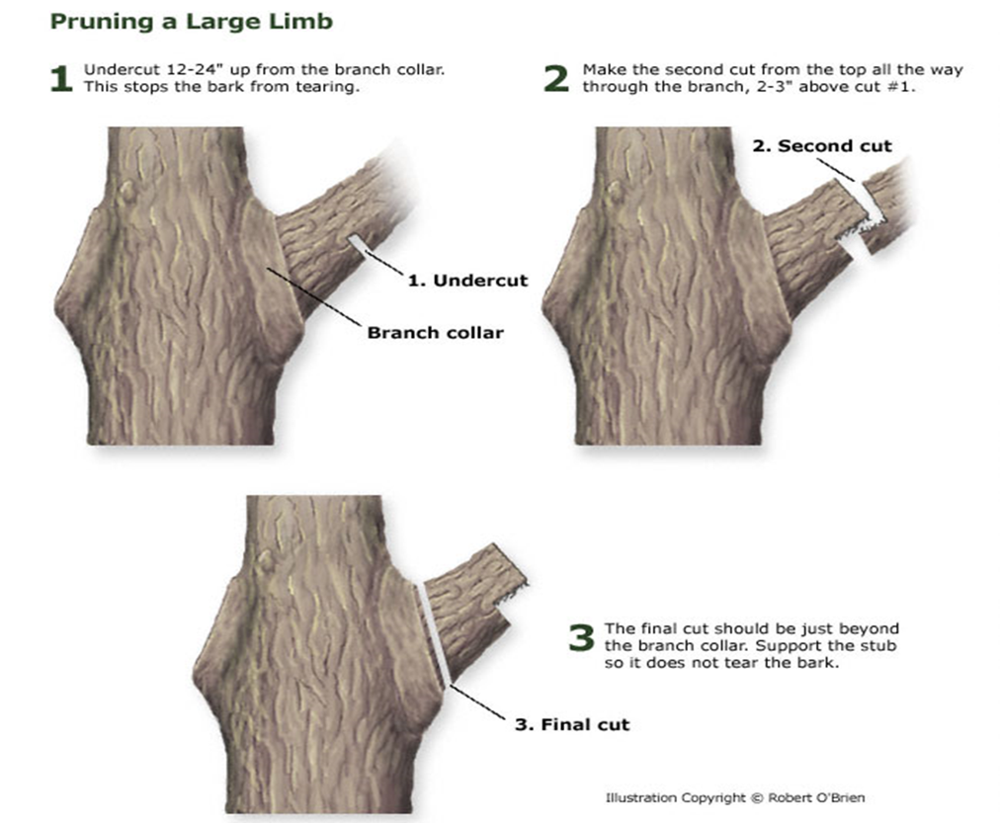
Begin pruning a tree by removing dead, diseased, or broken branches. Then remove branches that go straight up (water sprouts) or point downward. Then look at the branch structure and remove branches that are or will eventually become crossing branches. The final pruning will be based on total tree structure and function. Branches lower than 8 - 15’ will likely need to be removed in time.
Pruning Deciduous Shrubs
Multi-stemmed deciduous shrubs benefit from the removal of the oldest stems at the base of the plant. This keeps the plant open and vigorous. Follow this practice on lilacs, forsythias, and mock oranges. Allow a few of the most vigorous suckers to remain as replacements for the old stems. For shrubs that have not been properly pruned for many years, remove no more than one-third of the largest stems in any one year. Continue this procedure for two more years to complete the rejuvenation.
Additional maintenance pruning includes the removal of dead, diseased, crossing, and broken branches. Long branches can be cut back to a bud or to the point of attachment of an outward-growing branch to retain landscape form.
Prune most non-flowering or summer flowering shrubs in early spring before bud break. Pruning in early spring will remove the flower buds of spring-flowering shrubs. Therefore, prune spring-flowering shrubs after the blossoms fade.
Pruning Needled Evergreen Trees & Shrubs
The needled evergreen trees of Ohio are conifers. They can be grouped by bud patterns. Some conifers have whorled buds and, therefore, whorled branching. These include pines, spruces, firs, and Douglas-fir. In these conifers, there is normally one flush of growth in spring each year. Growth can be reduced and made fuller by pinching off half the length of the candle before needles expand in mid- to late-June in central Ohio (a week or two earlier in southern Ohio and a week or two later in northern Ohio). Most of these conifers can only be pruned back into the previous year’s growth. New buds will not break if you prune further back on a branch.
The other conifer group has random bud placement. These are the yews, arborvitae, cedar, Chamaecyparis, and junipers. Yews, hemlock and arborvitae have latent buds on older wood. By cutting the plant back, these buds may initiate new growth. The junipers, cedars, and Chamaecyparis do not have latent buds and can be pruned only within the needled portion of the branches.
Pruning should be done in late winter or early spring before growth begins. If a light pruning is necessary, it can be done in late June or early July.
Pruning Broadleaf Evergreen Shrubs
Broadleaf evergreens generally require very little pruning. Pruning should be limited to selective pruning to improve the natural habit or to keep it in scale with surrounding plants. Prune after the flowers fade. Prune back to a branch or bud. It is recommended that spent flowers of azaleas, mountain laurels, and rhododendrons be removed by snapping them off by hand.
Rejuvenate large or leggy broadleaf evergreens in early spring. Cut back one-third of the largest branches within six inches to a foot of the soil. Continue this process over the next two years. Apply fertilizer after rejuvenations pruning and before buds begin to grow.
Pruning Hedges
Training plants into hedges must begin when the plants are planted. Always keep the top of a hedge narrower than the base so all foliage is exposed to sunlight. Hedges may be sheared for a formal look. The formal shearing must be done one to three times a year to maintain the formal appearance. The first shearing should be done shortly after spring growth begins. Then repeat the procedure in early July if needed.
Pruning Vines
The primary reason to prune vines is to limit vigorous growth. Most pruning should be done in late winter or early spring while the plant is still dormant.
Vines that climb by holdfasts should be pruned to remove dead wood or to limit growth. Twining vines are generally pruned to maintain a full covering of foliage. They tend to produce most of their foliage on the newer growth.
Wisteria and clemantis require special pruning techniques. Refer to the Fact Sheets (Reference Section) on these two plants.
Tree & Shrub Problems
Woody ornamentals may experience a variety of problems during their lives. Some of these problems are caused by disease organisms and insects. Other problems are brought on by old age. Additional problems are caused by weather stress, physical damage, and human-induced stress.
Age, Stress & Physical Damage
Age. Trees and shrubs have a natural life span. As a plant ages, the physiological process of growth slow. The plant becomes less vigorous and more susceptible to disease and insect damage. The species, site conditions, weather conditions, and maintenance influence how long a plant will live. It is important to realize that the large tree in the front yard will eventually die. Planning for the event as it nears will result in continuity in the landscape.
Stress. Most urban landscapes are planted in what is called disturbed soil. Topsoil may be removed. Soil from the excavation of the basements ends up on the surface. The soil is compacted by heavy equipment. This results in poor soil texture and drainage with poor root-growth potential.
A simple test for texture is provided in the module on soils. To test drainage, dig several holes one foot deep and one foot wide. Fill these holes with water. If the water remains in the holes longer than one day, drainage should be improved. If drainage problems are severe, professional assistance is suggested.
Constructing planting mounds is a possible option where poor drainage is a problem. However, moisture still moves up into the mound by capillary action from the surrounding soil. Soil in a mound will dry out more quickly than surrounding soil. This will be a problem during droughts. Irrigation of mounds is tricky because the water tends to run off the sloped sides. Additionally, the roots of large trees will grow beyond the mound, becoming surface root problems in surrounding areas.
Compacted soil lacks pore space. Pore space is needed for the exchange of gases through the roots. Increasing organic matter in the top foot of soil can assist in some circumstances. Core aeration may help, but amending the soil with professional advice before planting gives better results.
Adding soil over existing roots may result in a plant’s death. This is due to reduced gas exchange and changes in drainage. Plant death often occurs 5-20 years after damage was done.
Weather and climatic stresses include high temperature combined with drought conditions and cold, windy conditions. Drought combined with high temperatures caused leaf scorch in some plants. The plants are forced into dormancy to cope with the conditions. A similar condition occurs when the soil freezes and plants are exposed to drying winds. Moisture is lost through the leaves of evergreen plants, desiccating the tissue.
Heat and moisture stress can result when roots are covered with pavement. The paving limits moisture penetration of the soil and causes heat buildup. Street trees are subjected to this problem plus confined root area and road-salt buildup during winter months. A soil test for soluble salts can potentially identify salt problems.
Pollution is an increasing problem in some areas. Acid rain and air pollutants can damage some plant tissue. Although these are not as common as other stresses, they should not be overlooked.
Physical Damage. Most physical damage is from lawn mowers and string trimmers. They can destroy the cambial tissue on the trunks of trees and shrubs. Mulching around trees and shrubs can help eliminate this problem.
However, mulching has also been abused. Mulch applied around the trunk of a tree or a shrub creates the cool, dark, moist environment advantageous for fungal growth. Keep mulch three to six inches from the base of the trunk. Mulching trees and shrubs to a depth of more than three inches of mulch reduces air exchange through the roots.
Construction damages roots by cutting them and compacting the soil over the roots. Roots of an established tree extend well beyond the drip line, yet protection during construction is often a fence a few feet from the trunk. A much larger area must be protected. Most of a tree’s roots are in the top 12 inches of soil; they can be easily damaged by spills of toxic chemicals, such as petroleum products, herbicides, and household cleaning products. Lawn care products that contain dicamba are used to control turf grass weeds. Tree and shrub roots are susceptible to damage from dicamba. Weed killers containing dicamba should not be routinely applied over the roots of trees and shrubs.
Roots & Sewers
Tree roots will grow in the path of least resistance. If they grow into a rock, the growth will be redirected. The potential for damage to sewer lines is minimal. Most roots are not that deep. Those that are will not break through a sewer line. Roots will grow into a sewer line if it is cracked. Most roots do not grow where it is constantly wet.
Surface Roots
Surface roots are a hazard. People can trip on them. Lawn mowers can damage them. Surface roots can damage pavement. Roots do not grow naturally on the surface. Young roots begin growing four to 12 inches below the surface. With age, they increase in girth. Roots gradually become exposed. These roots should not be covered routinely with soil because this will change the drainage pattern and air and water penetration.
A better solution is to cover exposed roots with mulch. However, if a ground cover is to be planted, it may be necessary to add a few inches of a light, porous soil before planting. Roots that are causing problems with pavement may be cut if you are sure that structural integrity and plant health will not be compromised. To avoid continuing problems in the same or nearby areas, install root barriers. Root barriers (plastic, metal, or herbicide impregnated fabric) can reduce problems with pavement and structures.
“Will my tree die if I cut the roots?” is a question that often arises. There is no absolute answer. Any time the roots are cut, an entry path is created for diseases and insects. If work must be done and roots must be cut, making clean cuts with a sharp saw reduces the potential for infection or infestation.
The greater the number of major roots cut, the higher the potential for problems. Cutting more than one-third of the roots is not recommended because it disturbs the foliage-to-root ratio.
Trees normally develop surface roots as they exceed 10” caliper. Ohio’s moderately to poorly drained soils and abundant rainfall combine to insure shallow rooting in many cases.
Insects & Diseases of Woody Plants
Master Gardeners must be aware of the different types of insect and disease problems that arise on woody ornamentals. There are many sources of information available to you. Each week during the growing season, Extension Educators from across Ohio and state specialists participate in a conference call. Current problems are discussed and a summary of the discussion, called the Buckeye Yard and Garden onLine, is sent out to all offices by electronic mail and is available at bygl.osu.edu Use this as a guide to current problems.
Assistance with diagnosis is available through the C. Wayne Ellett Plant Pest and Disease Clinic of The Ohio State University. The current forms, instructions for use, and fees are found at ppdc.osu. edu
Diagnosis is handled differently in each office. Check with the horticulture or agriculture educator for current procedures. For problems on valuable trees, the service of a certified arborist is always recommended. Extension offices may have a list of local certified arborists; otherwise, listings can be found online under tree care.
Woody Ornamentals Resources
Recommended Resources & Links to Bookmark:
- Baumrardt, J. 1968. How to Prune Almost Everything. Wm & Morrow.
- Brown & Kirkam. 2004. The Pruning of Trees, Shrubs & Conifers. Timber Press.
- Culp, D. 2012. The Layered Garden. Timber Press.
- Dirr, M. 1997. Dirr’s Hardy Trees and Shrubs: An Illustrated Encyclopedia. Timber Press.
- Dirr, M. 1998. Manual of Woody Landscape Plants, 5th Edition. Stipes Publishing, L.L.C.
- Jones, J. 2016. Urban Forests. Viking.
- Messervy, JM. 2014. Landscaping Ideas That Work. Taunton Press.
- O'Sullivan, P. 2007. The Homeowner’s Complete Tree & Shrub Handbook: The Essential Guide to Choosing, Planting, and Maintaining Perfect Landscape Plants. Storey Publishing.
- Reich, L. 2010. The Pruning Book. Taunton Press.
- Roddick & Hanson. 2007. The Tree Care Primer. Brooklyn Botanic Garden.
- Sternberg, G & J Wilson. 2004. Native Trees of North American Landscapes. Timber Press.
- Wohlleben, P & T Flannery. 2016. Hidden Life of Trees. Greystone Books.